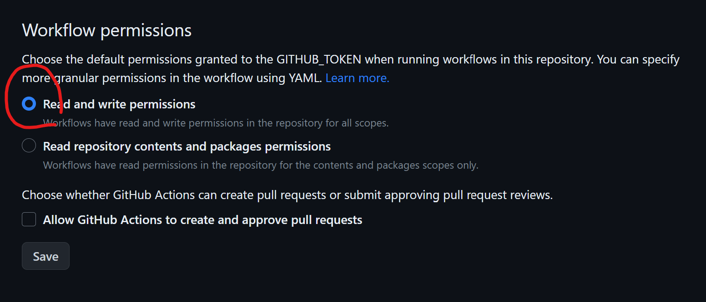
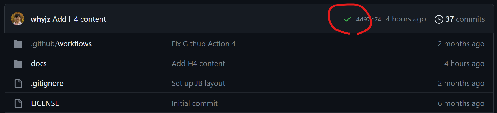

Writing narrative science#
This tutorial introduces Jupyter Book, a powerful tool for writing narrative science. I also used it to create the course webpages. The goals of this tutorial are to familiarize yourself with the MyST Markdown and to build and publish a Jupyter Book page using GitHub Pages.
1 | Jupyter Book#
Jupyter Book coordinates several tools in the Python ecosystem for publishing science and technical writing pieces. Some of the most relevant tools include
MyST Markdown: a derivative of Markdown, a markup language allowing users to create rich and formatted text for their documents using a simple text editor. It includes all Jupyter Notebook Markdown syntax and provides more formatting options than the latter.
Sphinx: a Python-based engine to read and parse markup-formatted source files and build documents in various formats, including HTML, PDF, and EPUB.
Jupyter Book is also capable of parsing source files provided as Jupyter Notebooks, making it powerful to compile research workflows for publication.
🛠️ Make a Jupyter Book#
Following the second hands-on session, we will further explore more markdowns here.
🚩 Task: Log into Callysto Hub (or other other working environment you prefer). Locate the repository you worked on during the previous class. Confirm that you have the following file structure:
./
├ commit_test.ipynb
├ environment.yml
├ ipyleaflet.ipynb
└ scipy_test.ipynb
🚩 Task: Inside this repository folder, create a folder named jbook. Move all existing Jupyter Notebooks into this folder. Then create a new Jupyter Notebook file named index.ipynb. Open index.ipynb and change the type of the first cell to markdown. Copy and paste the following content into that cell:
# Narrative Science
## Abstract
Narrative science is a concept of writing a piece that provides scientific and technical details in a research project with a narrative (i.e., context-based) structure so that readers can digest all the information in the text without cross-referencing.
## Introduction
bla bla...
```{note}
Hey where's the content?
```
### Task 1
### Task 2
### Task 3
🚩 Task: Install Jupyter Book by
!pip install jupyter-book
🚩 Task: In the jbook folder, create two files called _toc.yml and _config.yml with the following content:
_toc.yml
format: jb-book
root: index
chapters:
- file: ipyleaflet
- file: scipy_test
- file: commit_test
_config.yml
# Book settings
title : [a project name you like]
author : [your name]
copyright : "2025"
logo :
# Execution settings
execute:
execute_notebooks : off # Whether to execute notebooks at build time. Must be one of ("auto", "force", "cache", "off")
🚩 Task: Confirm that you have the following file structure in the repository:
./
├ environment.yml
└ jbook
├ _config.yml
├ _toc.yml
├ commit_test.ipynb
├ index.ipynb
├ ipyleaflet.ipynb
└ scipy_test.ipynb
🚩 Task: Now you should be ready to compile all Notebooks as a Book. Open a terminal, go to the root folder of the repository, and execute the following command:
jupyter-book build jbook
After this, you should be able to find a new folder at jbook/_build/html. Check the index.html file by double-clicking it on the JupyterLab browser!
❓ Question: How is the Note block formatted on the index.html page?
🛠️ Experimenting with MyST Markdown#
You will need to complete the following tasks by compiling jbook each time you make some edits. Try to achieve what the tasks ask! Jupyter Book documentation has nicely written pages about formatting with MyST Markdown, which should be a good reference here.
🚩 Task: Make a table in the Task 1 section of the index.ipynb so that it can be rendered by Jupyter Book like this:
Week # |
Topic |
Hands-on |
|---|---|---|
1 |
Course introduction |
Hands-on 1 |
2 |
Lecture 1 |
Hands-on 1 |
🚩 Task: In the Task 2 section of the index.ipynb, put the CSRSR logo and make it Figure 1. Next, cross-reference it in a statement below. Like this:
Fig. 1 The Logo of CSRSR.#
This statement says that Fig. 1 is the logo of CSRSR.
🚩 Task: Create a text file called references.bib inside the jbook folder with the following content:
@article{Baldacchino2025,
author = {Baldacchino, Francesca and Zheng, Whyjay and Wu, Kunpeng and Kapitsa, Vassiliy and Yegorov, Alexandr and Bolch, Tobias},
doi = {10.1016/j.srs.2025.100266},
issn = {26660172},
journal = {Science of Remote Sensing},
month = {dec},
number = {July},
pages = {100266},
publisher = {Elsevier B.V.},
title = {{Investigating seasonal velocity variations of selected glaciers in high mountain asia}},
volume = {12},
year = {2025}
}
Now, try to cite this reference in Task 3 section of the index.ipynb, like this:
Glaciers in the High Mountain Asia can speed up in the summer and slow down in the winter [Baldacchino et al., 2025].
❓ Question: Where does the bibliography show for the lask task?
🛠️ Commit changes to GitHub#
🚩 Task: Create a text file called .gitignore in the root folder of the repository with the following content:
# Jupyter Notebook
.ipynb_checkpoints
_build
This prevents temporary or constantly changing files from being archived by Git (in this case, everything in the _build folder), which improves the clarity of the development history.
🚩 Task: Commit and push every change to GitHub. Go to GitHub and confirm that everything but _build folder is uploaded.
2 | GitHub Pages and GitHub Actions#
GitHub Pages is a web-hosting service provided by GitHub that allows you to display the HTML content of a repository. Here, we will utilize the GitHub Actions service to create an automated workflow, enabling GitHub to compile the book and publish the HTML to GitHub Pages every time new content is pushed.
🛠️ Publish Jupyter Book to GitHub Pages#
🚩 Task: On GitHub, go to the repository site, make sure you have the GitHub workflow permission set to both read and write by going to Settings -> Actions -> General -> Workflow permissions, as this figure shows:

🚩 Task: Go back to the repository folder on Callysto Hub. Create a file named build.yml in
.github/workflows (you may need to create this folder as well). Add the following content to build.yml:
name: build-docs
on:
push:
branches:
- main
jobs:
build-docs:
runs-on: ubuntu-latest
steps:
- uses: actions/checkout@v2
- name: Set up Python 3.10
uses: actions/setup-python@v4
with:
python-version: '3.10'
- name: Install dependencies
run: |
pip install jupyter-book
- name: Build book
run: |
jupyter book build ./jbook
- name: Deploy to GitHub Pages
uses: peaceiris/actions-gh-pages@v3
with:
github_token: ${{ secrets.GITHUB_TOKEN }}
publish_dir: ./jbook/_build/html
🚩 Task: Confirm that you have the following file structure in the repository:
./
├ .github
│ └ workflows
│ └ build.yml
├ .gitignore
├ environment.yml
└ jbook
├ _config.yml
├ _toc.yml
├ commit_test.ipynb
├ csrsr_logo.png
├ index.ipynb
├ ipyleaflet.ipynb
├ references.bib
└ scipy_test.ipynb
🚩 Task: Commit and push all changes to GitHub. On the GitHub repository page, navigate to Settings -> Page. Make sure to set the settings like this figure shows:

Wait a moment until the yellow dot turns green:

Now you should be able to see the Notebook published on your GitHub pages at https://[YOUR_ACCOUNT_NAME].github.io/[REPOSITORY_NAME]!
❓ Question: What other settings available in _config.yml would you consider to edit?
3 | More resources#
Again, this website is built using Jupyter Book, and you can find the source files at here. You can use it as a template for MyST formats and publishing notebooks.
Francesca Baldacchino, Whyjay Zheng, Kunpeng Wu, Vassiliy Kapitsa, Alexandr Yegorov, and Tobias Bolch. Investigating seasonal velocity variations of selected glaciers in high mountain asia. Science of Remote Sensing, 12(July):100266, dec 2025. doi:10.1016/j.srs.2025.100266.